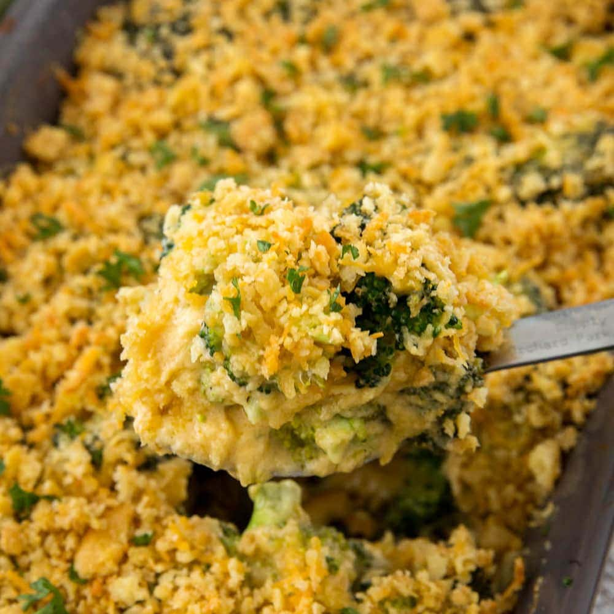

This post may contain affiliate links, please see our privacy policy for details.
Ingredients
1 (10.5 ounce) can condensed cream of mushroom soup
1 cup mayonnaise
1 large egg, beaten
¼ cup chopped onion
3 (10 ounce) packages frozen chopped broccoli
8 ounces shredded sharp Cheddar cheese
salt and pepper to taste
1 dash paprika
Steps
Preheat the oven to 350 degrees F (175 degrees C). Butter a 9x13-inch baking dish.
Whisk condensed soup, mayonnaise, egg, and onions together in a medium mixing bowl until combined.
Place frozen broccoli into a very large mixing bowl and break it up if necessary; add soup mixture and mix well to coat. Sprinkle with cheese and mix well; spread mixture into the prepared baking dish. Season with salt, pepper, and paprika.
Bake in the preheated oven until cheese has melted and the casserole is golden brown on top, 45 minutes to 1 hour.
Leave a Reply
New recipes sent directly to your inbox.
Easy, elegant recipes to keep you cooking all week long.
Leave a Reply